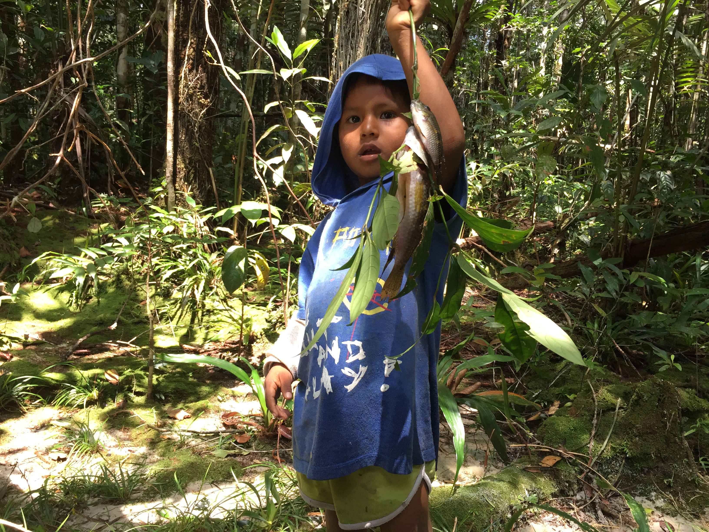
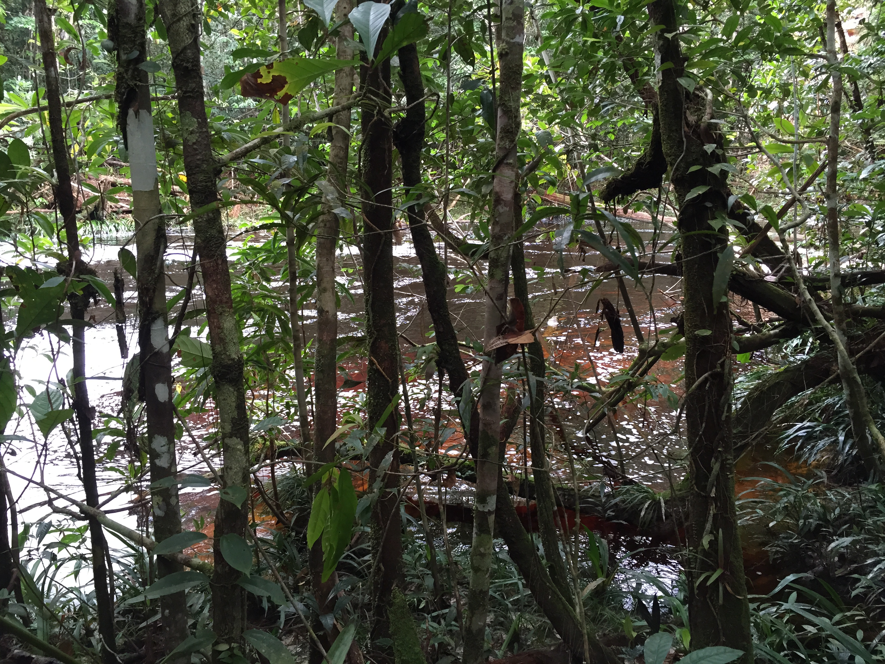
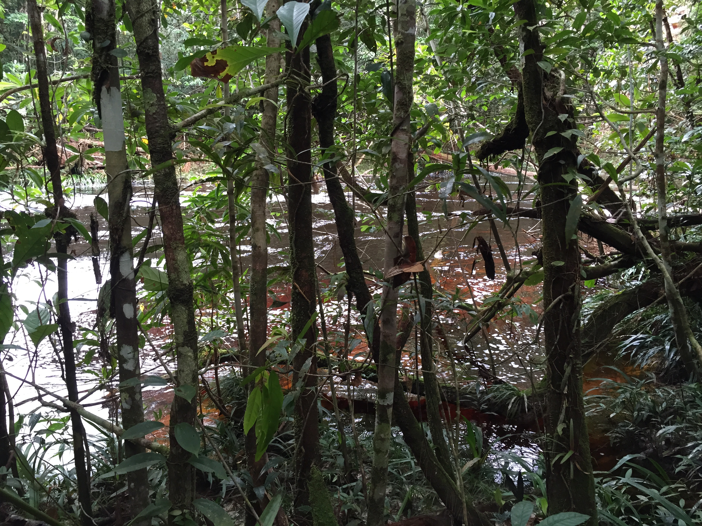

“La Chorrera queda donde nace el mundo sobre el río Pira Paraná, donde según el gurú civilizado sobre saberes ancestrales Wade Davis y el libro escrito por los propios indígenas “Hee Yaia Godo – Bakari. El territorio de los Jaguares de Yurupari”... nace la sabiduría más vital del mundo. Y es Amazonía. Y es Colombia. Y solo se puede llegar por avión de Satena, la aerolínea que une a los territorios olvidados. 2 horas de vuelo desde Leticia. La ventaja es que es un viaje muy lindo, abajo solo se ve el río que viaja como serpiente y la naturaleza que se empecina en seguir siendo sabiduría. Al llegar al caserío-aeropuerto uno siente como una emoción “salvaje” de llegar al fin del mundo pero también un dolor “civilizado” del abandono de Estado. Hay gente esperando familiares, hay muchos curiosos, está el ejército intentando hacer patria y guardias indígenas ejerciendo sus propios modos de ser en el mundo. Todos salimos por el camino con la maleta al hombro en busca del río y para dejarnos habitar por el comienzo del mundo.”
—Relatos de un salvaje de ciudad sobre los goces poderosos de la civilización Huitoto. Omar Rincón.
—A la Selva se le saca sabor. Idea y cámara por Omar Rincón. Edición por Gabriel Linares
“A la selva se va a perderse para conocerla. Se va a cazar: se sale tipo 9 de la noche y se regresa a las 5 de la mañana. Esta gente duerme poco. Si no cazó, nada pasa, ya vendrá otro día. El hermano de Juan salió el lunes y no cazó, salió el martes y tampoco, el miércoles la suerte no quiso, el jueves finalmente lo logró. Paciencia larga. A la selva también se le saca cultivos en las chacras. A la selva se le saca el sabor especial de cada planta y para qué sirve. Juan las conoce todas y sabe para qué es cada una, un genio de selva. Y a la selva, también, se va a sacarle besos, caricias, cuerpos y sexo. Los besos en público no pueden ser, son algo que queda para la intimidad de la selva. A la selva fuimos a ver el río de color achiote, un río donde para bañarse había que pedirle permiso. Su belleza era alucinante. La vida color achiote, agua transparente, naturaleza imponente. A la selva también se va a mojarse, y llueve mucho, y se siente la libertad de vivir en la naturaleza. A la selva se va a sacarle el sabor a la naturaleza.”
—A la selva se le saca el sabor. Relatos de un salvaje de ciudad sobre los goces poderosos de la civilización Huitoto. Omar Rincón.
—Nuestro viaje . Idea y cámara por Omar Rincón. Edición por Gabriel Linares

“Una de las claves de la paz es desmovilizar de la guerra a periodistas, empresarios, políticos, académicos, antropólogos, artistas, publicistas… desmovilizarlos de Bogotá y Medellín y sus saberes expertos para llevarlos a los territorios donde reina el abandono de Estado pero sobrevive otros modos de pensar, sentir y habitar la vida. A estos territorios de identidad, conocimiento y fiesta solo existen para nosotros “los civilizados” por Satena. Por eso es que ellos se dicen ser “la aerolínea que mejor conoce y sabe de país”. Satena tiene 53 años volando para conectar las regiones más lejanas de Colombia. Todo bien. Pero sucede que como es la única aerolínea y como es del Estado y como es para las regiones pobres y de los que poco importan pues funciona como se le da la gana y juega con los destinos de la gente. Solo hay un vuelo a la semana que lleva gente y alimentos y medicinas y chismes. Un solo viaje significa todo.
Sin embargo, el avión que va a La Chorrera llega cuando a bien quiera y pueda, es un destino incierto. Esto es bueno para mover un poco la conversa diaria y salir de ese ritmo pausado de la vida con que se vive cerca de un río y en mitad de la selva. El plan de ir al aeropuerto una vez a la semana es de todo el pueblo. Un ejemplo, nuestro vuelo debería salir el sábado hacia Leticia. Pero el avión no llegó. Tal vez llegaría el domingo dijeron los vecinos. Pero no, llegó. Terminó llegando el lunes. Eso pasa, y mucho. Ya nadie protesta, la gente cree que así funciona el asunto: cuando se vuela con Satena, no se sabe. Lo peor es que tampoco lo saben en su call center, ni los funcionarios, ni en el aeropuerto. Nadie sabe. Nadie responde. Nadie asume. Relato “salvaje” de país. Así trata el Estado colombianos a los pobres: no les cumple sus destinos. Este es un excelente ejemplo de por qué aunque se haya ganado la guerra de las armas, se sigue perdiendo la de la legitimidad social. La Chorrera está lejos de del amor del Estado, pero cerca de la sabiduría ancestral.”
—Conexión desconectada, Relatos de un salvaje de ciudad sobre los goces poderosos de la civilización Huitoto. Omar Rincón.


 
